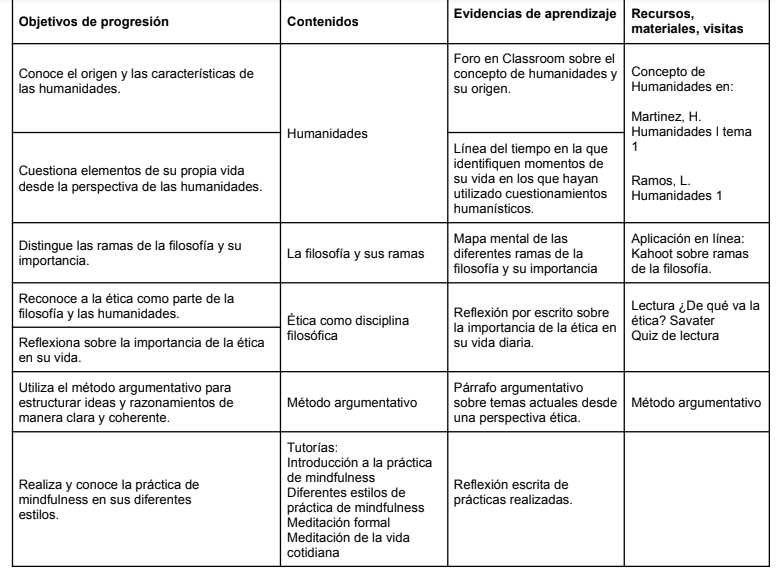

Materias de Repaso
Inicio
Materias
Atrás
Selecciona un tema de repaso
Humanidades
La filosofía y sus ramas
Ética
Método argumentativo
Mindfulness
Philosophical postures regarding passion, vission, and vice.
Aprendizajes esperados
